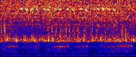
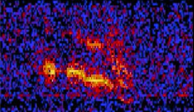

The Mysterious Sounds from Below
Below are some of the examples from instances where hydrophones picked up on unfimilar sounds underwater.
The 52 Hertz Whale
whale
The Train

train
Julia
Julia
Below are some of the examples from instances where hydrophones picked up on unfimilar sounds underwater.
whale
train
Julia